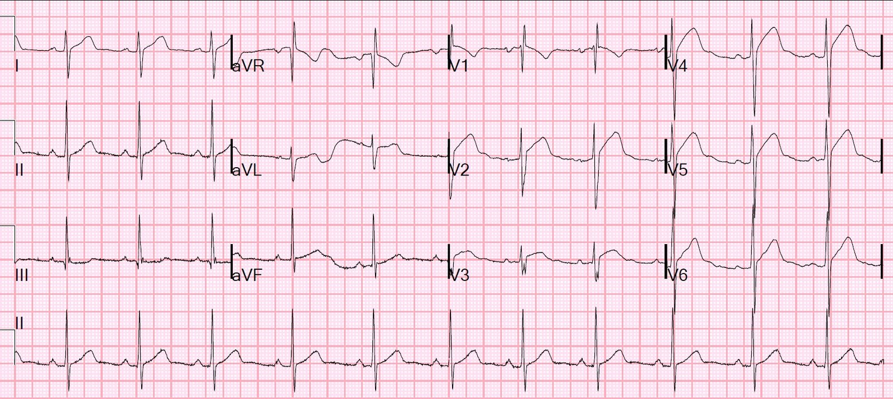
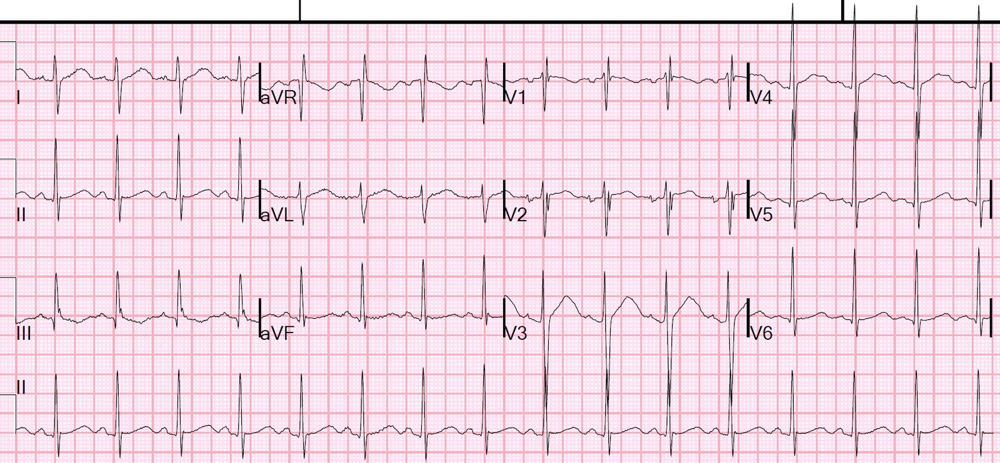
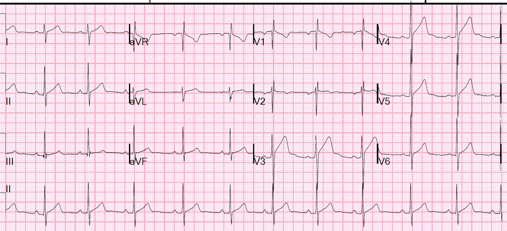
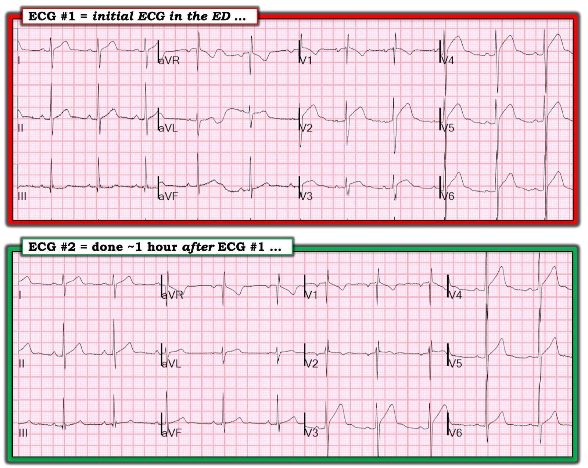

18/02/2019 — Đau ngực và ST chênh lên dạng lồi ở các chuyển đạo trước tim
Bản dịch tiếng Việt của bài "Chest pain and Convex ST Elevation in Precordial Leads" – Dr. Smith’s ECG Blog. Giữ nguyên toàn bộ 6 hình ảnh và 1 video của bản gốc.
Một nam giới 30 mấy tuổi, tiền sử bệnh (PMH) đáng chú ý gồm lo âu, hen phế quản và rối loạn sử dụng rượu, đến khám vì đau ngực đã 1 tuần. Bệnh nhân nghĩ mình đang bị đợt bùng phát hen, có khò khè. Sau đó anh ấy bị sốt và rét run, rồi đau ngực bên trái kèm ho. Sau đó tình trạng hô hấp và các triệu chứng nhiễm trùng cải thiện. Tuy nhiên, hôm nay, khoảng 1345 anh ấy bắt đầu đau ngực liên tục lan ra cánh tay trái. Anh ấy cho biết hiện cơn đau đang giảm dần. Kèm theo có cảm giác “lâng lâng, choáng váng như máu dồn lên đầu”, nay không còn. Anh ấy không có khó thở, vã mồ hôi, tê hay châm chích kèm theo. Cơn đau khởi phát khi đang quét dọn ở nơi làm việc. Vào ngày đến khám, anh ấy vẫn đạp xe được mà không gặp khó khăn gì.
Không có tiền sử bệnh tim. Không hút thuốc, không uống rượu (EtOH), không có tiền sử huyết khối tĩnh mạch sâu (DVT). Không phù chân. Không có yếu tố nguy cơ bệnh động mạch vành (CAD).
Đây là điện tâm đồ của anh ấy:


Nói chung, ST chênh lên (STE) dạng lồi ở bất kỳ chuyển đạo nào trong số V2-V6 đều là bất thường và gợi ý mạnh thiếu máu cục bộ (nhồi máu cơ tim thành trước, tắc LAD).
Như mọi khi, xác suất tiền nghiệm là yếu tố then chốt. Và xác suất tiền nghiệm của bệnh nhân này cực kỳ thấp.
Người ta không nên dùng công thức phân biệt ST chênh lên biến thể bình thường (thường được gọi là tái cực sớm) khi có dạng lồi. Tuy nhiên, nếu vẫn dùng, thì đây là kết quả:
QTc = 428 ms
ST chênh lên tại thời điểm 60 ms sau điểm J ở chuyển đạo V3 (STE60V3) = 2.5 mm
Biên độ sóng R ở V4 (RAV4) = 12 mm
Tổng biên độ QRS ở chuyển đạo V2 (QRSV2) = 25 mm
Giá trị công thức 4 biến = 17.92. Giá trị này thấp hơn điểm cắt cho tắc LAD (18.2), nhưng không thấp hơn nhiều, nên phải thận trọng.
Có sẵn một điện tâm đồ cũ. Tôi đã không xem nó cho tới khi viết bài này:


Mặc dù tìm thay đổi so với điện tâm đồ cũ có thể rất hữu ích, cách này không phải lúc nào cũng chắc chắn.
Xem bài này và các tài liệu tham khảo bên dưới:
Kambara (xem bên dưới) đã chỉ ra rằng tái cực sớm có tính động; xem ca này và phần bàn luận:
ST chênh lên tăng dần. STEMI hay tái cực sớm động hay viêm màng ngoài tim.
Vì vậy chúng tôi đã làm siêu âm tim tại giường:
Mặt cắt trục ngắn cạnh ức cho thấy thành trước co bóp rất tốt
Một điện tâm đồ ghi sau đó khoảng một giờ, khi bệnh nhân vẫn còn đau ngực:


Không có tiến triển, không có bằng chứng OMI/STEMI
QTc = 419
STE60V3 = 4.5
RAV4 = 19
QRSV2 = 17.5
Giá trị công thức = 18.83 (giá trị này nay phù hợp với tắc LAD)
Vào thời điểm này, kết quả troponin I lần đầu là không phát hiện được, dưới 0.010 ng/mL, điều mà nếu đau ngực là cấp tính thì vẫn có thể gặp trong OMI. Tuy nhiên, bệnh nhân này đã đau ngực kéo dài rất lâu.
Vì vậy chúng tôi chờ thêm một lần xét nghiệm nữa, và troponin lấy 2 giờ sau vẫn dưới 0.010 ng/mL.
Do đó:
1. Điện tâm đồ thứ 1 có dạng lồi dương tính giả.
2. Điện tâm đồ thứ 2 có công thức 4 biến dương tính giả
Tôi đã cho bệnh nhân xuất viện sau khi loại trừ các nguyên nhân gây đau ngực nghiêm trọng khác.
Những điểm cần học:
1. Hãy hoài nghi một điện tâm đồ có vẻ dương tính khi xác suất tiền nghiệm cực kỳ thấp. (Đừng hoài nghi nếu điện tâm đồ dương tính rõ ràng không thể bàn cãi!)
2. Mặc dù quyết định tái tưới máu trong đau ngực cấp không phụ thuộc vào troponin, một kết quả troponin không phát hiện được trong đau ngực kéo dài là bằng chứng mạnh cho thấy ST chênh lên không phải do thiếu máu cục bộ.
3. Hãy dùng siêu âm tim
4. Công thức này đúng là có dương tính giả.
5. Dạng lồi hiếm khi dương tính giả.
Tài liệu tham khảo về tính ổn định của tái cực sớm theo thời gian.
1. Kambara H, Phillips J. Long-term evaluation of early repolarization syndrome (normal variant RS-T segment elevation) (Đánh giá dài hạn hội chứng tái cực sớm (ST chênh lên biến thể bình thường)). Tạp chí Am J Cardiol 1976;38(2):157-61.
Trong nghiên cứu dọc trên 65 bệnh nhân có tái cực sớm, Kambara nhận thấy 20 bệnh nhân có ST chênh lên thành dưới và không ai trong số này lại không đồng thời có ST chênh lên thành trước. Mức chênh lên ở các chuyển đạo thành dưới nhỏ hơn 0.5mm ở 18 trên 20 trường hợp. Kambara cũng nhận thấy, ở 26% bệnh nhân, ST chênh lên biến mất trên điện tâm đồ theo dõi, và ở 74% mức độ ST chênh lên thay đổi trên các điện tâm đồ theo dõi.
2. Mehta MC. Jain AC. Early Repolarization on the Scalar Electrocardiogram (Tái cực sớm trên điện tâm đồ vô hướng). Tạp chí The American Journal of the Medical Sciences 309(6):305-11; tháng Sáu năm 1995.
Sáu mươi nghìn điện tâm đồ đã được phân tích trong 5 năm. Sáu trăm điện tâm đồ (1%) cho thấy tái cực sớm (ER). Các đặc điểm của ER được so sánh với nhóm chứng ghép cặp theo chủng tộc, tuổi và giới (93.5% là người da trắng, 77% là nam, 78.3% dưới 50 tuổi, và chỉ 3.5% trên 70 tuổi). Những người có ER có đoạn ST chênh lên, dạng lõm, trên tất cả các điện tâm đồ (1-5 mv), thường gặp nhất ở các chuyển đạo trước tim (73%), kèm ST chênh xuống soi gương (50%) ở aVR, và khía cùng trát đậm ở sóng R (56%). Các kết quả khác gồm nhịp chậm xoang ở 22%, khoảng PR ngắn hơn và chênh xuống ở 38%, sóng T hơi không đối xứng ở 96.7%, và sóng U ở 50%. Ở sáu mươi bệnh nhân, gắng sức làm bình thường hóa đoạn ST và rút ngắn khoảng QT (83%). Ở 60 bệnh nhân khác, các khảo sát liên tiếp trong 10 năm cho thấy ER biến mất ở 18%, và xuất hiện từng lúc ở những bệnh nhân còn lại. Các tác giả kết luận rằng ở những bệnh nhân có ER này: 1) có ưu thế nam giới; 2) tần suất ở người da trắng cũng phổ biến như ở người da đen; 3) bệnh nhân thường dưới 50 tuổi; 4) nhịp chậm xoang là rối loạn nhịp thường gặp nhất; 5) khoảng PR ngắn và chênh xuống; 6) sóng T hơi không đối xứng; 7) gắng sức làm bình thường hóa đoạn ST; 8) tần suất và mức độ ST chênh lên giảm dần khi tuổi tăng; 9) các cơ chế có thể của ER là cường phế vị, kích thích giao cảm, tái cực sớm của lớp dưới thượng tâm mạc, và sự khác biệt về điện thế hoạt động đơn pha ghi nhận được ở nội tâm mạc và thượng tâm mạc.

———————————————————–
Bình luận của KEN GRAUER, MD (18/2/2019):
———————————————————–
Một ví dụ tuyệt vời của Dr. Smith cho thấy việc sử dụng các thông số khác (tức là xác suất tiền nghiệm; siêu âm tim tại giường và troponin xét nghiệm nhiều lần) có thể vô cùng giá trị để loại trừ bệnh tim cấp.
- Mặc dù đã tìm được một điện tâm đồ cũ của bệnh nhân này — có vẻ như điện tâm đồ đó không có sẵn tại khoa cấp cứu (ED) vào lúc đưa ra các quyết định cấp thời. Vì vậy tôi tập trung bình luận vào 2 điện tâm đồ được ghi tại khoa cấp cứu (Hình 1).


===================
Theo kinh nghiệm của tôi — có một khuynh hướng (ngay cả ở những người đọc điện tâm đồ giàu kinh nghiệm) là vội nhảy vào những dấu hiệu điện tâm đồ cụ thể, mà không dùng trước một cách tiếp cận hệ thống để đọc bản ghi ban đầu — và sau đó, không so sánh từng chuyển đạo của bản ghi này với các điện tâm đồ khác trong ca. Tôi thường bắt đầu bằng việc đánh giá đầy đủ bản ghi ban đầu ( = ĐIỆN TÂM ĐỒ #1, là bản ghi PHÍA TRÊN trong Hình 1):
- Tần số và Nhịp: Nhịp xoang khá đều, tần số ~65-70/phút.
- Các khoảng: Các khoảng PR, QRS và QT đều bình thường.
- Trục: Trục lệch phải khoảng ~100 độ (tức là sóng lệch âm chiếm ưu thế ở chuyển đạo I ).
- Lớn các buồng tim: Không có.
- Thay đổi QRST ( = sóng Q – tăng tiến sóng R – thay đổi sóng ST-T): Có một sóng Q nhỏ ở chuyển đạo III — có phức bộ rSR’ ở chuyển đạo V1, phù hợp với RBBB không hoàn toàn (QRS hẹp; có sóng s ở cả hai chuyển đạo I và V6) — Vùng chuyển tiếp (tức là, vị trí ở các chuyển đạo ngực mà tại đó sóng R trở nên cao hơn độ sâu của sóng S) không xuất hiện cho tới tận chuyển đạo V6 (mà có khi cũng chưa, vì độ sâu sóng S ở V6 trông bằng chiều cao sóng R ở V6 …). Có lẽ dấu hiệu đáng chú ý nhất ở điện tâm đồ #1 là ST chênh lên dạng vòm (coving) (và đáng lo ngại) thấy ở các chuyển đạo từ V2 đến V6.
NHẬN ĐỊNH VỀ ĐIỆN TÂM ĐỒ #1: Nhịp xoang — trục lệch phải — RBBB không hoàn toàn — chuyển tiếp muộn — ST chênh lên dạng vòm ở các chuyển đạo từ V2 đến V6, dù không có thay đổi soi gương. Xác suất tiền nghiệm thấp đối với bệnh tim cấp (tức là bệnh nhân này còn trẻ và bệnh sử gợi ý một bệnh lý sốt cấp tính nhiều hơn là đau ngực do tim) — nhưng rõ ràng cần đánh giá thêm vì có ST chênh lên, để loại trừ một nguyên nhân đáng lo ngại (tức là nhồi máu cơ tim, viêm cơ tim).
- Có thể đã đặt sai vị trí chuyển đạo V3 ở điện tâm đồ #1. Lý do là hình dạng không chỉ của phức bộ QRS mà cả của sóng ST-T ở chuyển đạo V3 trông rất khác so với các chuyển đạo lân cận V2 và V4. Thực ra, hình dạng và mức độ ST chênh lên trông khá giống nhau ở các chuyển đạo V2, V4 V5 — nên hình ảnh ở chuyển đạo V3 cứ “không hợp lý”. Dù vậy, “chủ đề” tổng thể của điện tâm đồ #1 vẫn rõ ràng bất kể chuyển đạo V3 có được đặt chính xác hay không.
===================
Điều gì Khác biệt ở Điện tâm đồ #2?
Ở Điện tâm đồ #2 — một lần nữa có nhịp xoang — trục lệch phải — và hình ảnh RBBB không hoàn toàn. Dù vậy — ST chênh lên rõ ràng ít hơn so với những gì đã thấy ở điện tâm đồ #1. Còn điều gì Khác nữa giữa 2 bản ghi này? Điều gì có thể giải thích một số khác biệt này?
===================
TRẢ LỜI:
Nhiều khả năng hơn hẳn là chuyển đạo V1 và V2 đã bị đặt cao không đúng trên ngực ở điện tâm đồ #2. Lý do là: i) thành phần đầu của sóng P ở cả V1 và V2 trong điện tâm đồ #2 đều âm (thành phần đầu của sóng P hai pha ở điện tâm đồ #1 là dương; và sóng P dương hoàn toàn ở V2 trong điện tâm đồ #1); và, ii) giờ đây cũng có hình ảnh rSr’ ở chuyển đạo V2 trong điện tâm đồ #2.
- Vùng chuyển tiếp rất khác ở điện tâm đồ #2 !!! Lưu ý rằng đã có sóng R đáng kể ngay từ chuyển đạo V4 — và sóng R rõ ràng trở nên chiếm ưu thế trong khoảng từ V4 đến V5. Ngược lại, sóng R chưa bao giờ trở nên chiếm ưu thế ở điện tâm đồ #1.
NHẬN ĐỊNH VỀ ĐIỆN TÂM ĐỒ #2: Hình dạng và mức độ chênh lên của sóng ST-T ở chuyển đạo V3 của điện tâm đồ #2 trông tương tự như ở các chuyển đạo V2, V4 và V5 trong điện tâm đồ #1. Có thể lý do khiến mức ST chênh lên ít hơn và hình dạng đoạn ST mang dáng vẻ lành tính hơn (tức là dạng lõm (concave-up)) ở các chuyển đạo từ V4 đến V6 của điện tâm đồ #2 đơn giản chỉ là do cả 3 chuyển đạo này giờ đều có sóng R chiếm ưu thế. Có lẽ không có thay đổi đáng kể nào về hình dạng sóng ST-T giữa điện tâm đồ #1 và #2.
- Bằng chứng TỐT NHẤT ủng hộ việc không có bệnh tim nghiêm trọng nào ở bệnh nhân này đến từ sự kết hợp của — xác suất tiền nghiệm thấp — siêu âm tim hoàn toàn bình thường — các giá trị troponin âm tính. Nhờ vậy, bệnh nhân đã được cho xuất viện an toàn từ khoa cấp cứu.
- Nhiều khả năng đã có đặt sai vị trí chuyển đạo ở cả hai bản ghi — và có lẽ có sự khác biệt trong cách đặt sai các chuyển đạo ngực. Không nhận ra điều này có thể dẫn tới việc quy sai “thay đổi” hình dạng sóng ST-T giữa điện tâm đồ #1 và 2 là do một thay đổi động.
- Sẽ vô cùng hữu ích nếu ghi thêm một điện tâm đồ 12 chuyển đạo khác cho bệnh nhân này sau khi kiểm tra vị trí đặt điện cực một cách tỉ mỉ. Nếu điện tâm đồ “nền” thực sự này (với vị trí điện cực đã được kiểm tra) vẫn cho thấy hình ảnh tái cực với ST chênh lên dạng lồi trông đáng lo ngại — thì nên lưu điện tâm đồ này trong hồ sơ phòng khi bệnh nhân quay lại khoa cấp cứu vì một đợt đau ngực khác.
- Một ĐIỂM THEN CHỐT (PEARL) đáng cân nhắc ở những bệnh nhân có bản ghi nền trông đáng lo ngại — là ĐƯA CHO BỆNH NHÂN một bản sao thu nhỏ của điện tâm đồ của họ để mang theo người, nhờ vậy họ có thể đưa cho nhân viên y tế xem nếu sau này lại phải đến khoa cấp cứu.
Chúng tôi xin CẢM ƠN Dr. Smith đã trình bày ca bệnh này.
==========================
XEM THÊM:
- Để xem “Quan điểm của tôi” về việc sử dụng Cách tiếp cận Hệ thống khi đọc điện tâm đồ — BẤM VÀO ĐÂY.
- Để tìm hiểu thêm về cách nhận ra Đặt sai vị trí Chuyển đạo V1, V2 — BẤM VÀO ĐÂY.